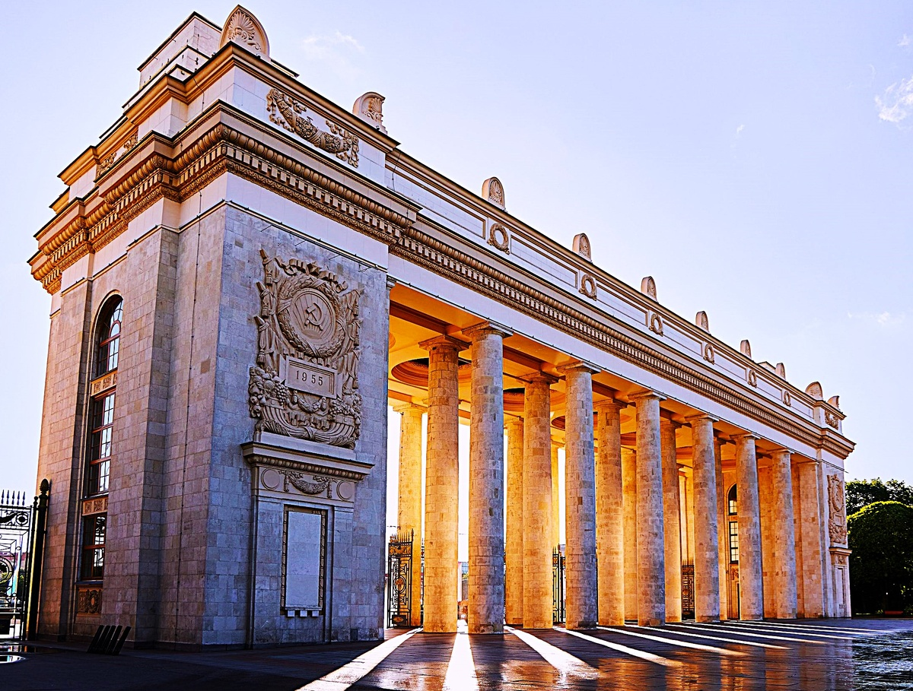
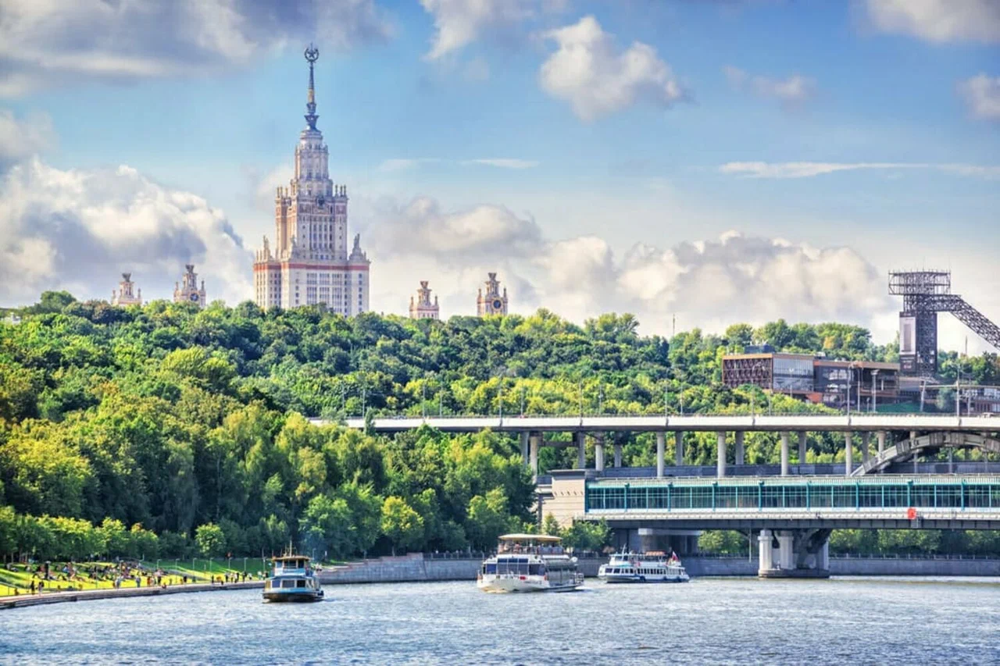

Парк Горького: Оазис в центре города
Парк Горького — один из самых популярных парков Москвы, расположенный на берегу Москвы-реки. Это идеальное место для отдыха, прогулок и развлечений для людей всех возрастов.
Парк был основан в 1928 году и назван в честь писателя Максима Горького. Сегодня он сочетает в себе историческую атмосферу и современные удобства. Здесь есть аллеи для прогулок, зоны для пикников, кафе и рестораны, а также спортивные площадки и аттракционы.
Летом в парке проходят фестивали, концерты и кинопоказы под открытым небом. Зимой здесь открывается один из крупнейших катков в Европе, привлекающий тысячи посетителей. Я провёл день, катаясь на велосипеде, наслаждаясь видами реки и пробуя местный стритфуд.
Совет: Возьмите напрокат велосипед или самокат, чтобы исследовать парк быстрее, и не забудьте посетить кафе у реки для вкусного перекуса!